|
この日はアグラへ向けて約４時間半の移動となり、またまた楽しい楽しい高速道路を走ります。o(＾o＾)oワクワク 海外旅行の場合バスの座席が指定されないことがよくあり、今回も早い者勝ちで席が選べる…といったような感じで、特に先を争って人を押し退けたりしなくても、どういうわけか私たちがバスに乗り込んだときに特等席であるはずの前の方の席が空いており、いつも良い場所ばかりでは申し訳ないので昨日はちょっと遠慮して少し後ろの席に座り、この日も後ろの方の席を取りました。 ところが、その二番目の席は私たちが泊まったホテルからバスが出発しても空いたままで、 そもそもジャイブールに入った最初の夜、基本料金を払っている私たちのホテルの方がレストランからあきらかに近いはずなのに、グレードアップした人たちの遠いホテルへの送りを優先したということが気に入りません。 前日の行程は、リッチホテルに近い方面からの観光だったので、基本料金グループが先に出発するのはわかりますが、帰りも私たちのホテルのある街から、当然のようにリッチホテルへ向かい、ダンスショーがあるということからまんまと同じ道を往復する手間を省かれました。 そして、三日目のこの日も基本料金グループの集合時間の方が早く、これがインド流なんだ…と悟りました。 しょっぱなから不愉快なお話で申し訳ありません。m( _w_ )m 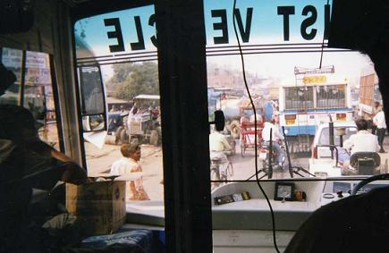 これはその特等席の特権を生かして撮ったニュー・デリーの朝の道路です。 前を走っているバスは立っている人が多いことから、地元の人たちが乗る公共のバスだとわかります。 バスの左側に赤い荷馬車のような物が走っていますが、これは多分ラクダが曳いているものです。 ここで私たちが乗っていた良いバスについて説明しますと、運転室と乗客室がガラスで区切られており、写真の真ん中にあって邪魔な黒い柱は運転室と乗客室を出入りできるガラスのドアの外枠とガラスの壁の柱なんです。 客席の真ん中にある通路の正面にこのドアがありますが、ここは滅多に開けることがないようで５日間も乗っていて、たった一度だけ開けられたことがあり、初めてそこにドアがあったのだと知りました。 この運転室の左側にダンボールが置いてありますが、初日から騒動となったミネラルウォーターが入っており、その後こうしてバスに積み込んで、お昼前に車内で配られるようになりました。 暗くてよくわからないかもしれませんが不思議だったのが、このダンボールに肘を突いて乗っているおじさんで、最初は交代で運転をする人かな？と思っていたのですが、このおじさん一向に運転席には座りません。 一体何のためにこのおじさんがいるのか…というと、バスが目的地に着いて停車すると踏み台を昇降口の下に置いて、乗り降りする私たちに手を差し伸べる役目と、何かちょっとした手続きにバスを降りるだけ…（それも最初のうちだけで、あとは踏み台しか出さないことがよくありました） 右側に黒く見えているのが一番前の席に座ったハリーさんの頭と肩の部分です。 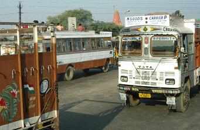 中央のバスの屋根に人が乗っているのがおわかりでしょうか？ やむを得ず後続の白いトラックで説明しますが、「どこが？」と言いたくなるほど普通のトラックのようですが、フロントガラスの両端に色とりどりの『房』がついているのがおわかりでしょうか？ はぁ？こんなものではデコトラとは言えない？ オレンジのマリーゴールドを飾っているのはまだ大人しい方で、日本の商店街でクリスマスツリーに飾るような赤や銀のセルロイド製のモール（わかるかなぁ…）を、フロントガラスの周りに飾り付けたり、両側にこれまたお祭りのときに商店街を飾るような造花や吹流しのような房がついていたりします。 デコ車はトラック野郎に限ったことではなく、オートリクシャーも自転車のリクシャーもキラキラ ピラピラしたものをなびかせるのが、今インドではブームのようです。 「インドには動物園はありません」 ハリーさんの説明によりますと、インドにはあちこちにいろいろな動物がいるので、わざわざ動物園まで行かなくてもいいのだそうです。 そりゃそうだ。 ラクダが曳く荷馬車は車と一緒になって道路を走っているし、公園にはリスが餌を求めてチョロチョロしています。 熊使いや蛇使いもいました。 不思議なことに、犬は何処にでもいたのですが、猫の姿はまったく見えません。 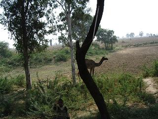 さて、バスは街中を抜けて高速道路に入り、道路の両側には見渡す限りの畑が広がってきました。 雑草がはびこっている所や雑木林もありますが、何処までも何処までも続く畑ばかりの人っ子一人姿が見えないところに、ラクダが一頭だけでいたのは、これも野良なんでしょうか？ 私たちが訪れたのは乾期だったので、何処から水を持ってくるのか…と気になりましたが、川らしきものは見当たらず、よくよく見ていると用水のようなものを作りかけてあるのが目に入り、今はきっと遠くから運んでくるのだろう…と勝手に思ったりしていました。 相変わらずパパラ！パパラ！とラッパのクラクションを鳴らしては、バスは山ほど荷物を積んだトラックを追い越し、窓やドアのない路線バスを追い越し、同じくアグラへ向かうらしい観光バスも追い越したり追い越されたりして先を急ぎますが、速度は５～６０ｋくらいだったと思います。 反対車線を見ていると、バスの屋根やトラックの荷物の上に人が乗っています。 人が歩いていたと思うと、ぽつん…と家らしきものが見えてきて、やがて１０軒くらいの家々が道路に面した広場を囲むようにあり、その広場にはニワトリや犬や牛なども放し飼いにされており、家の中から持ち出したらしい椅子に座った男性たちが集まって、何かを飲んでいたりタバコをくゆらせたりしています。 何処にでもあったのが井戸のような丸い形をした水場で、気をつけて見ていたのですがポンプのような物があるようには見えず、そこから洗面器のような物で水をすくっているようで、そこで身体を洗っている男性の姿をよく見かけました。 えっ？と思わず振り返ってしまったのが、女性が着るサリーらしき物を洗濯する若い男性がいたことで、『主夫』はインドにも存在するようです。 広場には飲み物や食べ物を売る露店が出ており、野菜や果物を売っておりましたが、日本の人参よりちょっと大きめの大根が皮を剥いて売られていました。 ここは一体なんなのか？ そこで休憩をしているトラックや荷車の運転手は勿論男性ですが、停められている車の数にしては休息をしている男性の姿が多過ぎ、他のところではどうだったのか…？と考えてみると、車が一台も停まっていない所でも新聞を読んだりお茶を飲んだりする何人かの男性たちの姿がありました。 では、女性は何処にいたのか？と言いますと、集落から離れた日陰さえない遠くの畑でサリーを頭に被って仕事をしていました。 男性も交えて家族で働いているらしき図も見かけましたが、それは稀な風景でした。 ジャイブールからアグラへ向けて大きな平野になっているようで、道路はほぼ平坦なところに作られており、山らしきものは右を見ても左を見ても見えなかったように記憶していますが、変り映えのしない風景の中を走り続けてやっとトイレ休憩のできる土産物屋に到着しました。 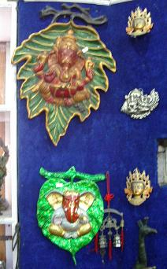 お決まりのように休憩タイムはたっぷりと与えられ、アクセサリーやインテリア小物などを見て周っていたらこんな壁飾りをみつけました。 ここで、手彫りの杖をみつけて足の悪い父に 再びバスに乗り込み、外を眺めていると丈の長いススキが沢山生えており、このススキはこの地方では屋根材に使われているそうで、言われてみれば日本むかし話に出てくるようなわらぶき屋根の家々がチラホラありました。 その屋根のある家の庭らしきところに、 丸くお盆のように平ぺったい物が沢山並べられており、アレは一体なんだろう？と思っていると、牛の糞なのだそうで、燃料に使うものだとハリーさんが説明してくれました。 そんな家がチラホラ点在しているところでもバスは停まるようで、この日ひとつだけみつけた学校の前でも停まるようでしたが、運行時間などが書いてある停留所の案内板などはなかったようです。 サービスエリアのようになっている集落をいくつか通り過ぎてみると、村長さんといいますか、長といいますか、その集落を治めている人の姿が見えてくるようで、駐車場を囲うように家々が集まって人も動物も共存しているようなところもあれば、家々の裏を柵で囲って家畜たちが道路に出ないようにしている村、道路際の家では繋いである牛がいる村…と、放し飼いの牛たちの交通事故防止の対策をしている村もありました。 とにかく、一応高速道路と呼ばれている道路との境に柵ひとつなく駐車場があるわけで、放し飼いになっている大切な牛を交通事故で死なせてしまったこともあったのでしょう。 この日のお昼は花の小道に象が奉ってあったところで、両側を通り道に挟まれた細長い花壇に咲いている花は、ミニバラ・桔梗・ラベンダーなど日本で見かけるものばかりで、これといった珍しい物はなかったと思います。 バスは再び高速道路を走り始めます。 インドの人たちはお金が貯まると土地を買い、女性たちは宝石を買うと、ハリーさんが何度も口にしていたことですが、外壁も内壁もレンガ作りになっている家が多いインドでは、家作りに大量に必要となるレンガの運搬費も馬鹿にはなりません。 ここはレンガ工場が沢山あるところで、今は何もないレンガ工場の近くに土地を買って、時々やってきてはレンガを買って運び入れたり、積み重ねたりしているのではないかと思われるような塀や家の作りかけが点在していました。 高速道路の料金所は州境にありますが、日本のようにゲートが作られているわけでもなく、バスがノロノロになってきたと思っていると、前にも後ろにも車が数珠繋ぎになって少し進んでは停まり、それが州境であり料金所でありました。 人一人がやっと入れるくらいの小さな小屋で、バケツのような容器から柄杓ですくって飲み物を売っている男性がいます。 私たち観光客は冷房のあるバスで移動しているのですが、窓を全開にしているとはいえ公共のバスに乗っている人や、その屋根に乗っている人、ラクダの曳く荷馬車やトラックに積んである荷物の上に乗っている人たちには、それでもありがたい水分に違いないのでしょうが、それにしても不衛生この上ありません。 料金所を抜けて暫く走るとなんだかバスの走り方がヘン。 州知事さんが道路を補修するお金を出さないのだそうで、道路がでこぼこになってしまい、平らなところを走ろうとするとこんな風になってしまうのだそうで、砂煙が舞い上がります。 こんなところはただの田舎道だ！ 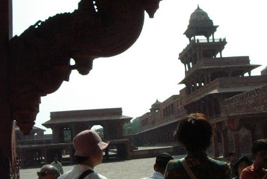 ここと次に訪れるタージマハルでは携帯や計算機、刃物類、タバコやマッチ、ライター、食べ物などの持ち込みは禁止になっているそうで、（水と薬だけはＯＫ）カメラと財布だけをバッグに残してバスを降りました。 ここでも沢山の子供たちが待ち構えていました。 ここはアグラ市内まであと３７㎞という地点にあり、アグラ要塞を築いたアクバル帝が『勝利の都』として造営した城跡だそうで、１９６３年に世界遺産として登録されています。 わずか１３歳で三代目の皇帝として即位したアクバルは、的確な判断力でムガール帝国を不動のものとしましたが、世継ぎとなる男子に恵まれず大変悩んでいたそうで、シークリーに予言の当たる聖者がいると聞き、自ら聖者を訪ねたところ近々願いは成就されると言われ、その予言通りに男子が誕生し、この聖者の住むシークリーに都を移しましたが、猛暑のため水源としていた湖が涸れてしまい、水不足からわずか１４年で再びアグラに還都しました。 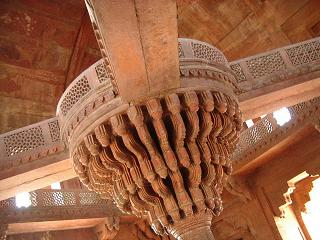 この城跡はイスラム様式とヒンドゥー様式を融合させたアクバルの工夫が随所に見られ、宗教にはあまり関心のない私でもアクバル帝の凄さを教えられました。 宗教の緩和を図った皇帝の第一夫人はヒンドゥー教徒から、第二夫人はキリスト教徒から、第三夫人はイスラーム教徒から迎え、それぞれにお祈りの場を設けましたが、その天井や壁にはそれぞれの教徒を象徴する図柄を組み合わせたものとなっていました。 貴賓謁見の間の真ん中に建てられた太い柱の上に丸い展望台のような物（写真右）を作り、縦横に架けられた橋を渡って建物の内周に沿って造られた回廊に繋げられ、その下で協議される声がよく聞こえるように丸く造られた天井。 アクバル皇帝はこの展望台のようなところで私的な謁見や、下で行われる会議の成り行きを見聞していたのだそうです。 余談ですが、名古屋にも『アクバル』というカレー専門店があり、娘に教えられて私も何度か行きましたが、 と、答えてくれました。 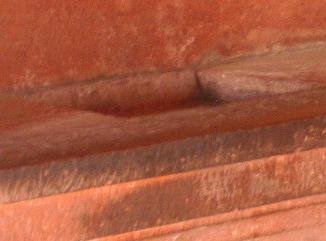 さて、またまた質問ですが、これはなんでしょう？ 部屋の壁の下方が飾り棚のように出っ張っており、まるで鉢植えの植物や飾り物が置いてあったのではないかと思われるようなところに、一回り大きなレンガが入りそうな四角く掘り抜かれた穴。 これ、お妃様のへそくりの隠し穴だそうで、その昔は金銀財宝がザックザクと入っていたに違いありません。 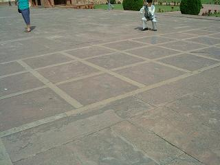 これは『人間チェス』が行われていた広場です。 矢張り駒と同じようなスタイルをしていたのだと思いますが、どんな風にして行われていたのか見てみたいものです。 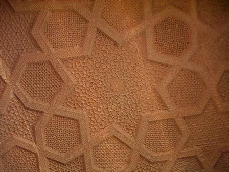 ファテーブル・シークリーはジャイブールの建造物と同じように赤砂岩が多く使われており、通常ならば１５年はかかるところをわずか５年で完成されたそうです。 それぞれの建造物に個性がありましたが、遠征のためテントで生活することが多かったせいかテント様の造りも多いようで、貴賓謁見の間をはじめ宗教の違うお妃たちのために設けられた礼拝堂も、天井が丸く大きな出入り口を備えたテント様の形をしていました。 柵の所に寄りかかってみんなが下を見ているので、一体何があるのだろうと覗いてみると１０mくらい下に貯水池として使われていたような人口池があり、お兄ちゃんらしき１２～３歳くらいの男の子が声高に何かを言っていたかと思うと、その弟らしき１０歳くらいの男の子がその池に飛び込みました。 アグラまで４０km近くの道程をまた走りますが、ファテーブル・シークリーに着く前から鉄道の線路が道路に沿って見え隠れし始め、電車が走るのを見てみたいものだと思っていたのですが、中々電車はやってこず、道路の下を潜って離れていくレールの先遠くにやっと青い電車を発見することができました。なにせ田舎道のことですから電車の本数も少ないのでしょう。 インドと言えば【タージ・マハル】と言われるくらい、有名なここは電動自動車か人力車に乗り換えねばならず、バスから電動自動車に乗り換えて日本の神社で言えば参道の入り口まで行きます。 ご多分に漏れずここでも待ち構えておりました。 入場料を支払うハリーさんの側に立っていると、男の人が冷たいミネラルウォーターを配ってきて、それを受け取ったらお金を要求されるのではないか…と思いながらも、一日中持参している生温い水ばかり飲んでいる私たちには、汗をいっぱいかいている冷たい水は魅力的で、他の人も手を伸ばしているのを確認して私もいただきました。 誰もがそうしたように、先ずはひと口飲んで一息ついていると、トウモロコシさんが２本のペットボトルを手にやってきて、 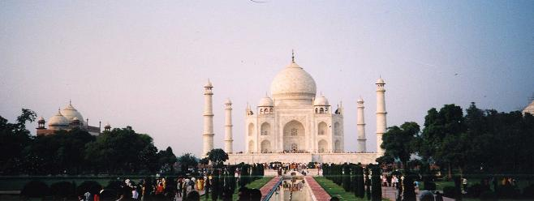 これが白大理石のタージ・マハルです。 ムガール帝国第５代皇帝シャー・ジャハーンが１６３１年から２２年の歳月をかけて建造した愛妻ムムターズ・マハルの霊廟で、１９８３年に世界遺産として登録されました。 シャー・ジャハーン皇帝は、タージ・マハルに膨大な費用をかけて建造しました。 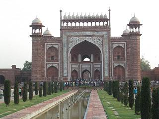 正面の真ん中に川を作りその両側が通路となっていますが、入り口となる後ろにはこんな立派な門があり、どちらの写真でも建物の前に小さく見えているのが人です。 この通路の両側には芝を敷き詰めた中にいくつかの散歩道ができており、矢張りリスがあちこちで遊んでいました。 タージ・マハルは土足厳禁となっており、本来ならば脱いだ靴を手に持って廟内へ入るのですが、ツアーでは靴カバーが用意されており、沢山の靴が脱ぎ置かれているところで靴の上にカバーを履いて前に進みます。 この建物に使われている大理石は、アグラの西にあるジョドブールのマクラーナ村から切り出されたものだそうで、光のあたり具合で変化をする乳白色の石が使われています。 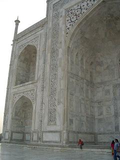 ご覧下さいこの大きな入り口。 左が入り口の上にあった模様で、右側が外側を額縁のように飾っていた模様です。 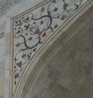 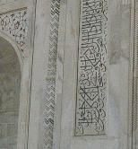 この入り口を入ると網を張った地下が足元に見え、ここに何があったのかは奥の礼拝所のようなところで説明されたのですが、人のざわめきで何も聞こえませんでした。（ _w_； 階段を上がって二階へいくと、 皇帝 黒大理石の廟はできなかったけれど、 廟の周りを一周してヤムナ川を眺め、向こう岸にあるというアグラ城を探しましたがみつからず、何枚かの記念写真を撮ってそろそろ帰り時間となり、靴カバーを外して電動自動車を降りたところまで帰りますが、ミネラルウオーターをもらった出入り口を出た途端に物売りの総攻撃で、こういうのは性格なんでしょうか？ ひえー、やりますなぁ…（＾ｍ＾； 私勘違いをしていたようで、前回で訪れたことになっていた大理石の店はこの後に訪れていたようです。 この時私は何も買わずに早目にバスが停まっている店の前に出てきており、バスのドアが開けられるのと同時に乗り込んでいたのですが、それはそれで店の外で待ち構えている売り子のねらい目のようで、あれやこれやとお土産を持ったおじさんたちがバスに乗り込んできます。 
その中で私の目を引いたのがこの『ビンディ』のセットで、駄菓子屋さんなどでいろいろなカードを入れて吊り下げてあるような、一枚に透明のポケットをいっぱいつけ、その中にこの写真のようにいろいろなデザインのものが、横に六つ縦に六つの３６個が入っていたものです。 値段を聞くと千円だそうで、これなら買っても良いなと一枚買いました。 そもそもビンディとはなんぞや？ で、日本に帰ってきてからこれを額につけておしゃれをするのか？というと、それほどの勇気は私にはありません。（＾ｍ＾； ええ、『少し』だけです。 残りはシンプルなセーターなどに貼り付けて、２～３ヶ所糸で留めておけば洗っても落ちないだろうし、何か手芸に使えるのではないかと思ったわけです。 そんな私の言葉を聞いて、近くの席の人たちが我も我もと買いはじめ、売り切れる最後の方ではなんと５００円になっていました。 私は気が小さいので、「オジサン５００円返して！」とは言えませんでした。（ _w_； 話が後先になって申し訳ないのですが、前日この店と間違えていた宝石店では、勿論アクセサリー類は無視して通り過ぎ、二階にはお土産もあったのでそこでちょっと買い物をしました。 大きな飾り棚に様々な色をした大理石の装飾品が沢山飾ってあるものがあり、店の人が飾り棚ごと「５０万で売る！」と言っていました。 しかし、これは好きな人にはとても安いのではないかと思えましたが、運搬費が高くつきそうです。 飾り物は埃がたまるので滅多に買いません。 夕食を済ませてホテルに到着すると、パーティーがあるそうで道路からホテルの建物まで行く通路に車がいっぱい停めてあって、バスが入り口近くまで行けず、やむを得ずそこでバスを降りてホテルまで歩きました。 結婚披露か何かおめでたいことがあったようで、華やかなドレスの女性たちの姿があちこちで見られる玄関ホールを抜け、それぞれに部屋の鍵を受け取って三々五々エレベーターに乗って部屋に向かいます。 この日と次の日はシイタケさんと同室で、シイタケさんは小まめにその日身につけていた下着などを洗濯するため、いつものように私に先にお風呂に入るように言い、私ももう慣れっこなのでさっさとお風呂に入りました。 さすがに疲れが出てきて、この日はシャワーだけで済まそうと裸になってバスタブに入り、カーテンを引いてお湯を出して身体を洗っていると… ちょっとちょっとぉ…冗談じゃないわよ。。。
水とまではいきませんが、髪を濡らしてなかったのを幸いにシャンプーを諦め、早々に出てきましたが、アグラではガンジス川と同じように水で身体を洗うのか？という感じです。 「シャワー目茶苦茶ぬるかったよ！」 仲間のどちらかが遊びに来たのだと思ってドアを開けると、同じツアーの人で、 ボイラーが故障でもしたのだろうか？ 何処やらでそんなことがあったなぁ…と思い出して、 「そういえば添乗員さん、このホテルにいるって言ってたね」 「英語で喋れ！って言われた…orz」 そこへ一緒に飲もうと誘っていたトウモロコシさんがやって来て、コレコレシカジカ…と説明をすると、自分の部屋から持ってくると部屋を出て行き、シイタケさんはやっとシャワーを使える…とばかりにその準備にかかりました。 しばらくしてドアがノックされ、ほいほーい！とばかりにドアを開けると 緊張した面持ちの二人のスタッフの顔が一気に緩み、一人がつかつかっと部屋に２～３歩入ってきたかと思うと、バスルームの扉を開け、その内側に付いている金具を指差しました。 「えー！ なに？」 私の手からビール瓶を取り上げて、スポン！と栓を抜いてみせ、 とまあそんなことで、自分の部屋に帰って栓抜きを探し回ったトウモロコシさんも、みつけられずに肩を落としてやって来て、スリップ一枚で慌てて身を隠したシイタケさんもシャワールームに入ることができ、一件落着です。  続きを読む
続きを読む
 |